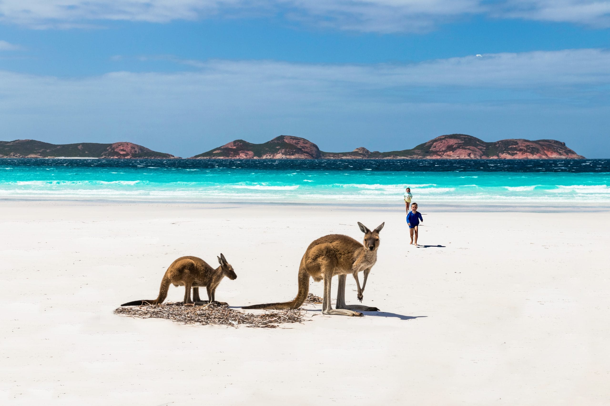
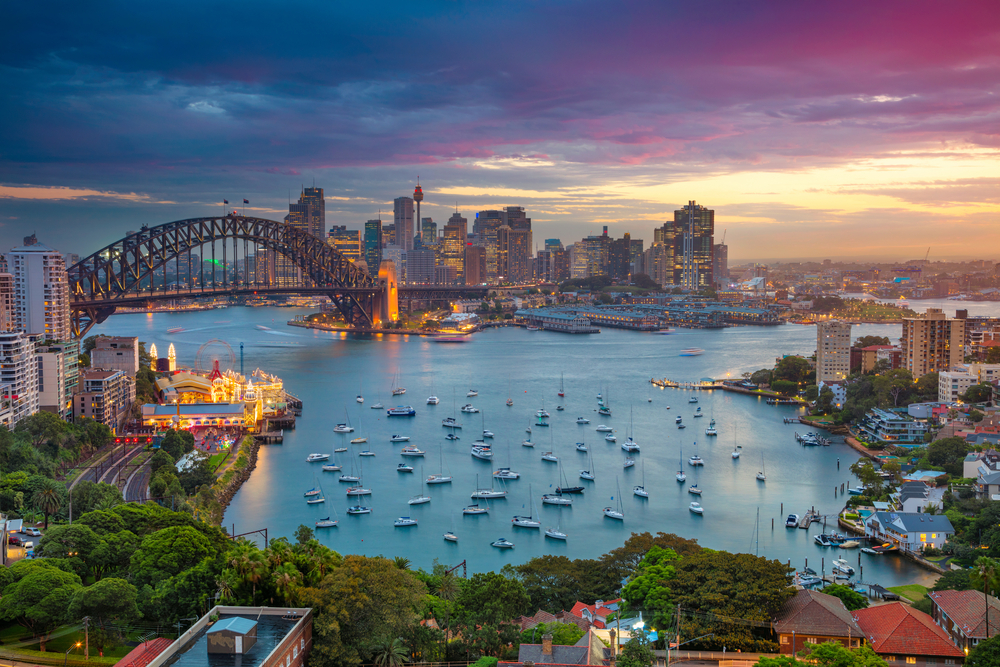
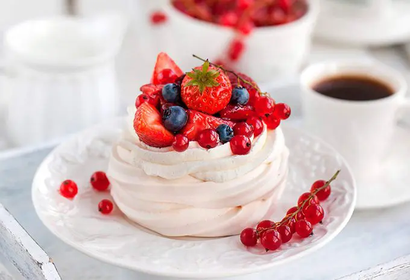
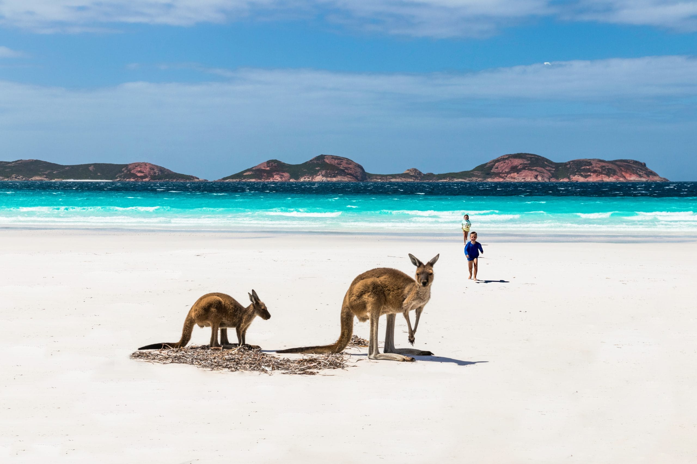
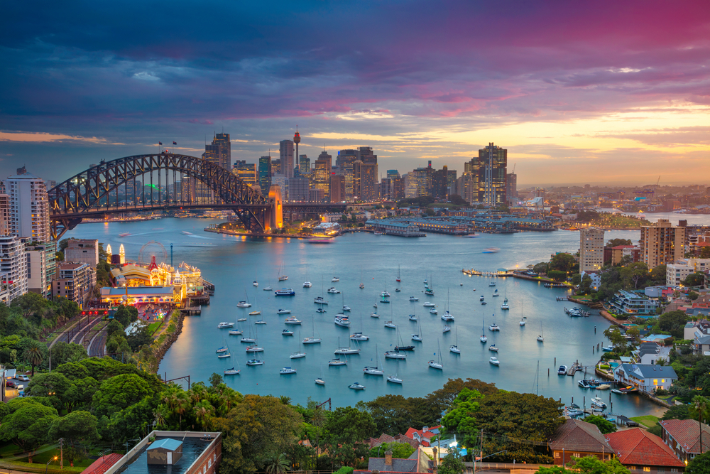
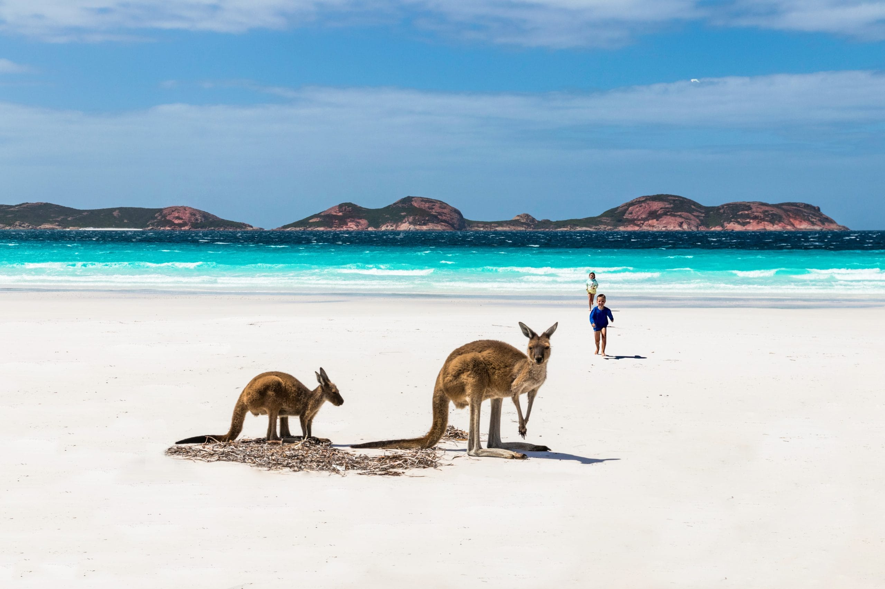
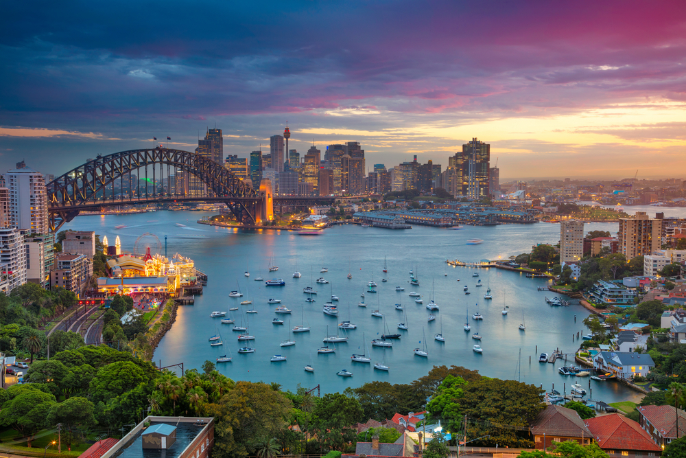

Seu próximo destino de descobertas!🛫
Estudos, experiências únicas e diversão garantida em um dos países mais incríveis do mundo!
📍 Onde fica a Austrália?
Clique nas imagens:



CULTURA
A cultura da Austrália mistura a tradição dos povos aborígenes com influências britânicas e multiculturais. Os aborígenes têm forte ligação espiritual com a natureza, expressa no "Dreamtime", na arte pontilhista e no som do didgeridoo.A colonização britânica e a imigração de diversos países trouxeram grande diversidade cultural. Os australianos valorizam um estilo de vida ao ar livre, com churrascos, praias e esportes como rugby e surf. O país também realiza diversos festivais culturais e musicais, como o Vivid Sydney e o Australia Day, que celebram arte, luz, música e identidade nacional.Além disso, a Austrália se destaca em educação, ciência, arte e cinema, enquanto cresce o reconhecimento e respeito pela cultura indígena.
🌳🐨A Austrália abriga uma das faunas e floras mais únicas do mundo, resultado de seu isolamento geográfico por milhões de anos. Sua fauna é conhecida por animais emblemáticos como o canguru, o coala, o ornitorrinco e o equidna, além do emu, aves exóticas como o kookaburra e o cacatua, e répteis como crocodilos e diversas espécies de cobras e aranhas. A flora também é bastante diversificada, com destaque para o eucalipto, árvore nativa essencial para os coalas, e a acácia (wattle), flor símbolo nacional. Outras plantas características incluem a banksia e a grevillea, comuns em diferentes ecossistemas como florestas tropicais, savanas e desertos. O país investe fortemente na preservação ambiental, com parques nacionais e projetos de conservação voltados à proteção de suas espécies nativas e habitats naturais.
IDIOMA
O idioma oficial da Austrália é o inglês, herdado da colonização britânica. No entanto, o país possui um sotaque próprio, conhecido como "Aussie English", e diversas expressões e gírias típicas que fazem parte do cotidiano. Além do inglês, a Austrália é um país multicultural, e muitas línguas são faladas por comunidades imigrantes, como italiano, grego, árabe, chinês e vietnamita. Também existem cerca de 150 línguas indígenas, embora muitas estejam em risco de extinção. O governo tem incentivado a preservação desses idiomas como parte do respeito à cultura aborígene.
TRADIÇÕES
Quer viver a cultura australiana de verdade? Confira as tradições que fazem a Austrália ser única:
✔️ Churrasco ao ar livre com os amigos
✔️ Esportes como estilo de vida
✔️ Celebrações como o Australia Day e Anzac Day
✔️ Cultura indígena milenar com danças e o som do didgeridoo
✔️ Um país multicultural e super acolhedor
CURIOSIDADES
🦘 Mais cangurus do que pessoas: A população de cangurus é quase o dobro da população humana da Austrália!
🌏 Maior ilha e menor continente: A Austrália é o único país que ocupa todo um continente.
🔥 Grande Barreira de Coral: Localizada na costa nordeste, é o maior recife de coral do planeta e pode
até ser visto do espaço!
🏖️ Praias infinitas: Existem mais de 10 mil praias — se você visitasse uma por dia, levaria quase 30 anos para conhecer todas.
🌇 Cidades vibrantes: Sydney, Melbourne e Brisbane estão entre as cidades com melhor qualidade de vida do mundo.
📜Cultura indígena milenar: Os povos aborígenes vivem na Austrália há mais de 60 mil anos, sendo uma das culturas mais antigas do planeta.
🐍 Lar de muitos animais perigosos: O país abriga algumas das cobras, aranhas e águas-vivas mais venenosas do mundo.
CULINÁRIA
🦘Bush food: ingredientes nativos usados por aborígenes (canguru, emu, frutas nativas).
🥩Churrasco ("barbie"): muito popular com carnes variadas.
🍖Carnes exóticas: canguru, crocodilo, emu (também usadas na gastronomia moderna).
🥧Influência britânica: torta de carne (meat pie), fish and chips, sausage rolls.
🍰Doces típicos: pavlova, lamington, Anzac biscuits.
🥪Vegemite: pasta salgada típica, passada no pão.
🍪Snacks famosos: Tim Tam (biscoito de chocolate).
🍘Culinária multicultural: forte presença de comida asiática e mediterrânea.
🍸Bebidas: vinhos australianos, cervejas locais e flat white (tipo de café).
INTERCÂMBIO?
🛫 1. Requisitos principais
Estar matriculado em uma instituição de ensino (geralmente no ensino superior).
Ter bom desempenho acadêmico.
Comprovar proficiência em inglês (IELTS, TOEFL ou equivalente).
Receber a “Confirmation of Enrolment” (CoE) da universidade australiana.
🩺 2. Visto e seguro saúde
É necessário o visto de estudante (Subclass 500).
Contratar o Overseas Student Health Cover (OSHC) — seguro saúde obrigatório.
Verificar possíveis exigências de vacinas e exames médicos.
💰 3. Custos e orçamento
Custo de vida médio: cerca de AU$ 24.500/ano (sem contar mensalidades). - R$85.750,00
Gastos principais: moradia, alimentação, transporte e materiais.
Cidades grandes como Sydney e Melbourne são mais caras.
🏠 4. Moradia
Opções:
Acomodação estudantil (residência universitária ou prédios para estudantes).
Homestay (com família local).
Aluguel compartilhado (dividir casa/apartamento com outros estudantes).
Geralmente é exigido depósito (bond) de 4 semanas de aluguel.
Verifique se contas (água, luz, internet) estão incluídas.
🚍 5. Transporte e vida prática
Use transporte público com passes estudantis.
Abra uma conta bancária australiana e adquira um chip local de celular.
Planeje o trajeto entre moradia e campus antes de escolher onde morar.
👩💼 6. Trabalho e estudos
O visto de estudante permite trabalhar meio período (com limite de horas).
Verifique se as disciplinas cursadas na Austrália valem créditos na sua universidade brasileira.
✅ 7. Checklist antes da viagem
Carta de aceitação + CoE.
Visto aprovado e OSHC contratado.
Passagem comprada e moradia temporária reservada.
Documentos (passaporte, histórico, vacinas) organizados.
Orçamento planejado.
💬 Depoimentos de Viajantes
“Viajar com a Aussie Go Agency foi uma das melhores decisões da minha vida! A Austrália é simplesmente incrível.” — Mariana Souza
“Atendimento excelente e suporte em todas as etapas. Recomendo demais!” — Lucas Ferreira
📞 Fale Conosco
Quer conhecer a Austrália com a Aussie Go Agency? Entre em contato!
📍 Endereço: Av. das Nações, 500 - São Paulo/SP
📧 E-mail: contato@aussiegoagency.com
📱 WhatsApp: (11) 95926-47180
Troque sua rotina por aventuras internacionais. Venha fazer intercâmbio!!🧳
 


